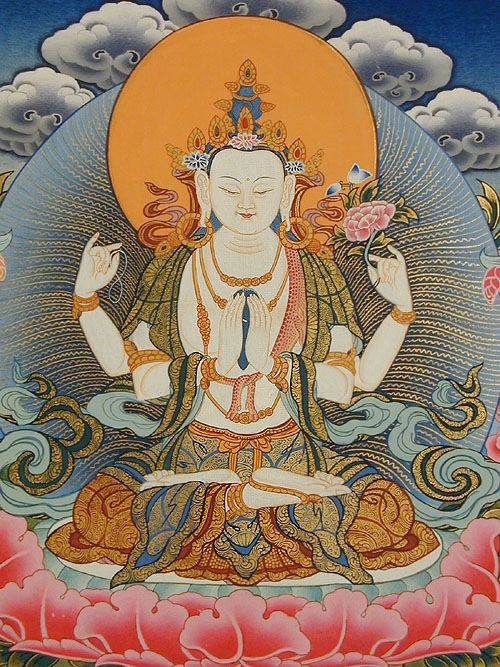

原来莲花象王
释尊在过去世，未成佛前，曾得莲花象王佛传授此咒，而成佛后，亦曾传授此咒多次。惟当除盖障菩萨请求传授，释尊却云：“印度某大城中，
除盖障菩萨于是率领千二百名
观音菩萨赞
三世诸佛无尽之功德
圣观
度生事业遍满空界
大悲导师前我顶礼赞
六字大明咒理广博，略释如后：
咒云：
嗡嘛呢叭弥吽
（一）
嗡——
嘛呢——如意宝珠
叭弥——莲花开敷
吽——
（二）
嗡——白光
嘛呢——消灾吉祥
叭弥——清净
吽——雷声施无畏
（三）
嗡——皈命
嘛呢——如意宝珠
叭弥——莲花开敷
吽——三身、三学。
（四）
嗡——法报化三身
嘛呢——消灾吉祥
叭弥——清净吉祥
吽——雷吼施无畏
（五）
嗡——生起
嘛——智寂；谓以智冥理（智理一如）
呢——寂灭无生
叭——光明圆觉；谓以慧断障成大圆觉
弥——出生
吽——拥护
（六）
嗡——离障
嘛呢——离垢；是如意宝珠，光净无染，能增长功德，无不如愿成就。
叭——满愿具足，是全开莲花；观音菩萨感应道交如莲花开敷，圆满具足。
弥——除灾降伏
吽——光明圆满；谓以慧断障成大圆觉
又：嗡——佛部
嘛呢——宝部
叭弥——莲花部
吽——金刚部
全体合起是为羯摩部，亦即是事业部：观自在菩萨微妙心印也。
（七）
嗡——心光圆满
嘛呢——如意宝珠
叭弥——莲花清净无垢
吽——施愿吼、三施无畏
（八）
嗡——智慧
嘛呢——无垢无畏
叭弥——一尘不染
吽——灾难化吉祥
（九）
嗡——慧光普照
嘛呢——无著无碍
叭弥——心空万法空
吽——檀那波罗密即布施波罗密
（十）
嗡——以智慧光断除烦恼障
嘛呢——如意吉祥
叭弥——心净则佛土净
偈云：一念心清净，处处莲花开，一花一
吽——福缘善庆
（十一）
嗡——普安文佛
嘛——
呢——定光王菩萨
叭——自在王菩萨
弥——无量寿菩萨
吽——大力尊菩萨
以上诸王菩萨乃是阿昙佛化身，而阿昙佛即是普安文佛所化也。
（十二）
嗡——表天道脱离轮回之苦
嘛——表阿修罗道脱离斗争之惨
呢——表人道脱离贪嗔痴慢妒五毒
叭——表
弥——表饿鬼道脱离饥渴之灾
吽——表
摧碎七情六欲，得断
（十三）
嗡——能闭塞
嘛——能闭塞修罗道，使灵魂不得入；观音菩萨将
呢——能闭塞人道，使离再生人道苦；即将十道中九道（天、人、修罗、地狱、饿鬼、畜生、声闻、缘觉、菩萨）悉皆闭塞，而余佛道。
叭——能免畜生道轮回之劫
弥——能脱离沉沦饿鬼道之惨痛。
吽——能
（十四）
嗡——表天道之白色
嘛——表修罗道之青色
呢——表人道之黄色
叭——表畜生道之绿色
弥——表饿鬼道之红色
吽——表地狱道之黑色
（十五）
表法有二：1.以六凡；2.四圣
1、 以六轮回——六凡而言：
嗡——表天道
嘛——表修罗道
呢——表人道
叭——表畜生道
弥——表饿鬼道
吽——表地狱道
六字大明咒能断除轮回，出
2、 以地位而言：
嗡——由菩提心发，初入十信位，由是上进。
嘛——入十住位
呢——入十行位
叭——入十回向位
弥——入十地位
吽——入金刚乘大觉位
是以念持六字大明咒，能超越十地，成就无上正等正觉，此四圣之表法也。
（十六）
念诵观想初机成就之后，再修止观。
嗡——成白色
嘛——成红色
呢——成黄色
叭——成绿色
弥——成蓝色
吽——成黑色
六字大明咒功德
功德与世俗之福德相异，福德乃有漏，有限制者；功德则无漏，无限制也。以
功德偈：
功超有漏证无漏
德转凡心为佛心
此谓每日均须改造人心，若不改造，则无功德，始终轮回也，发愿小者将人心改造为罗汉心，亦有改造为缘觉心，或菩萨心者，而无上正等觉三字遂改为无上菩提心。
四圣甚好，仍以佛为究竟。
念持六字大明咒，能促使恢复自性莲花，如莲花处水不染，此喻六根六尘不染着义——如意宝珠即出现，乃能破